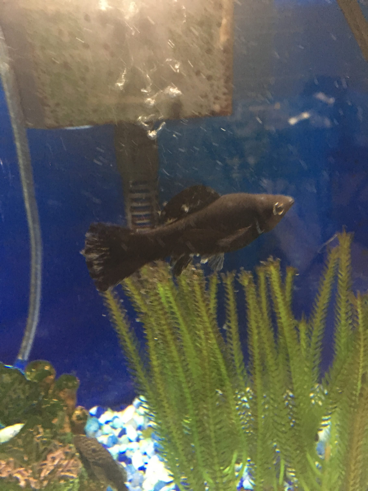
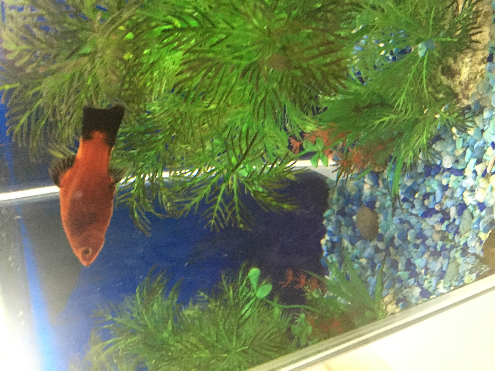
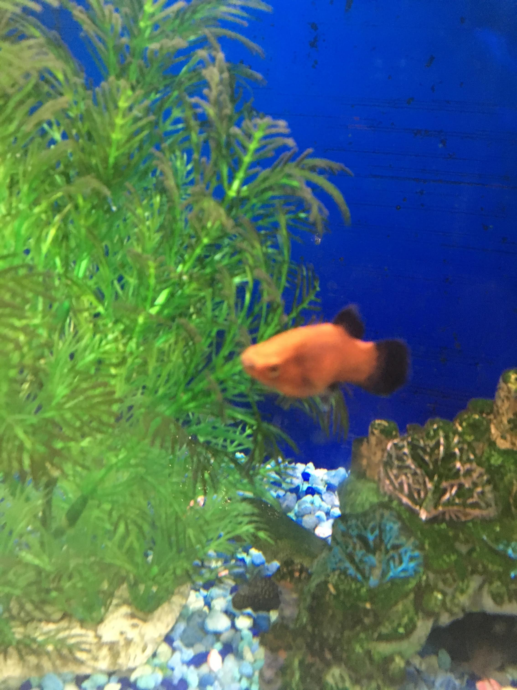
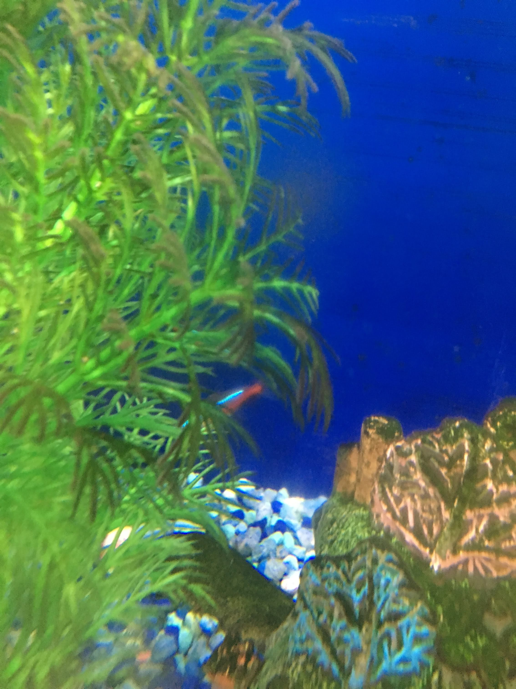
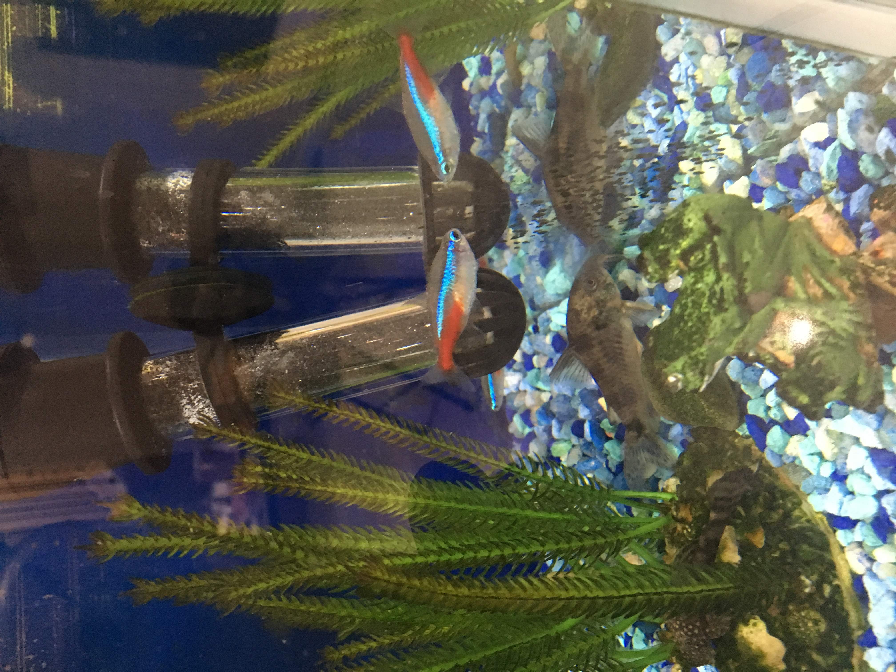
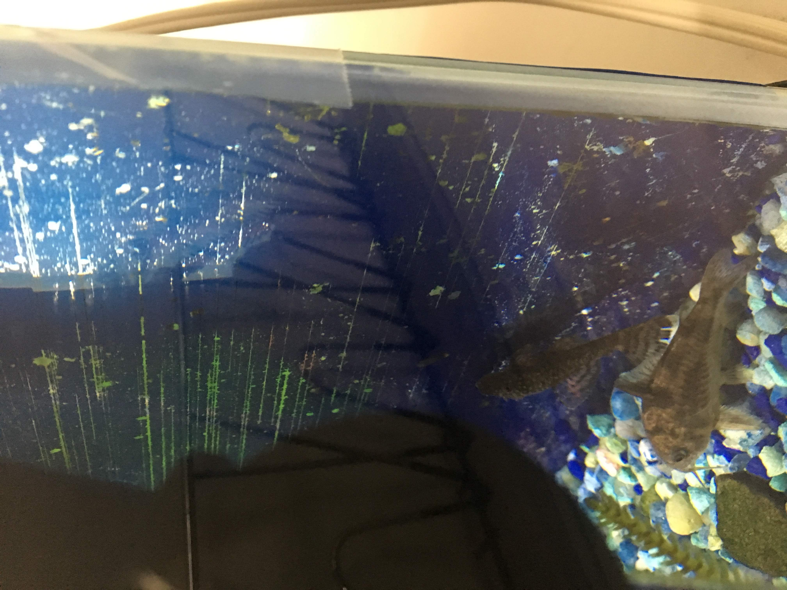

Lindor
Lindor is the black fish. She is the only black fish so
it's easy to tell who she is.

Jalabi
Jalabi is one of the orange fish. She has a C on her tail which
make the pattern of a jalabi.

Cupcake
Cupcake is very sweet and never disurbs other fishes,
because she was sweet I named her Cupcake.

Cotton
Cotton is part of the name cotton candy. She had different so since cotton
cany has different flavor i named her cotton.

Candy
Candy is also part of the cotton candy name.

Gulab
Gulab is part of Gulab Jamoon and since the fishes are brownish I
named them gulab Jamoon, because Gulab Jamoon is brown

Jamoon
Jamoon is part of the Gulab Jamoon name.
Twix
If you haven't noticed my entire fish tank is
named after sweets, I named twix a sweet.

Snicker
As I did for Twix i named Snicker after a candy.